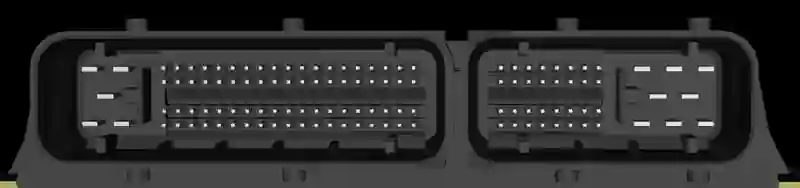
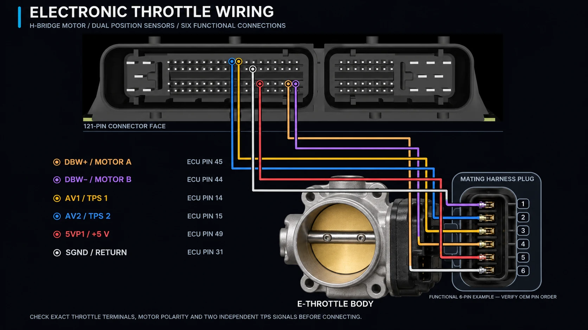
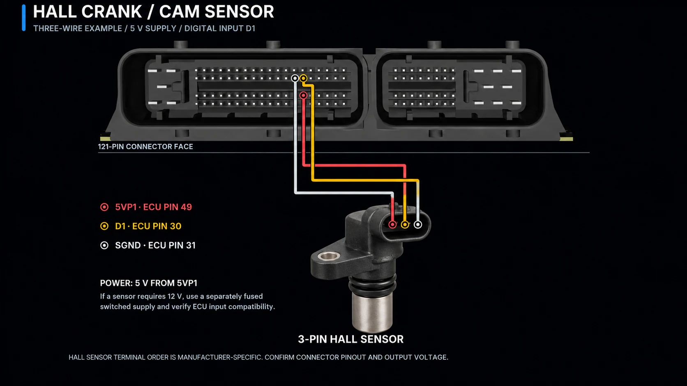
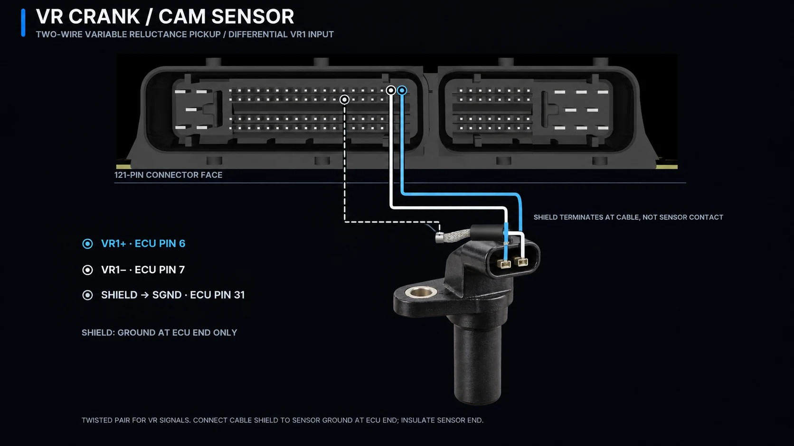
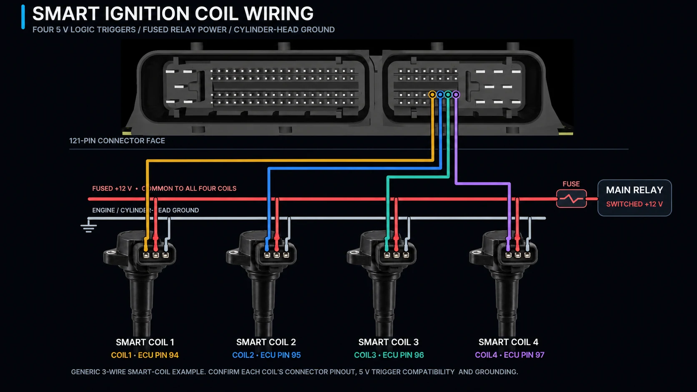
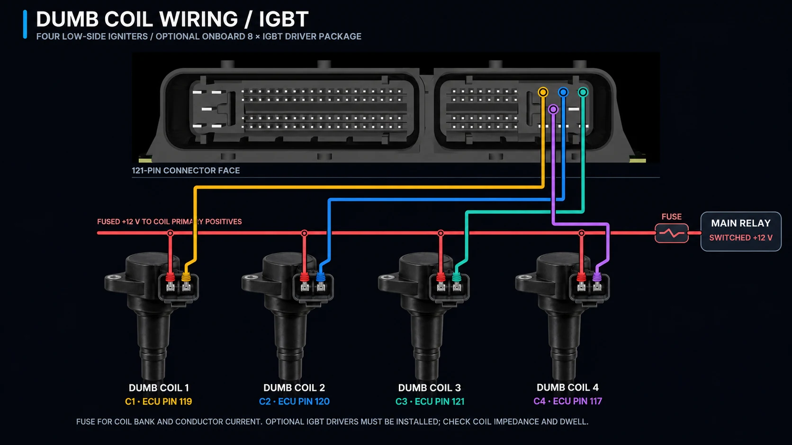
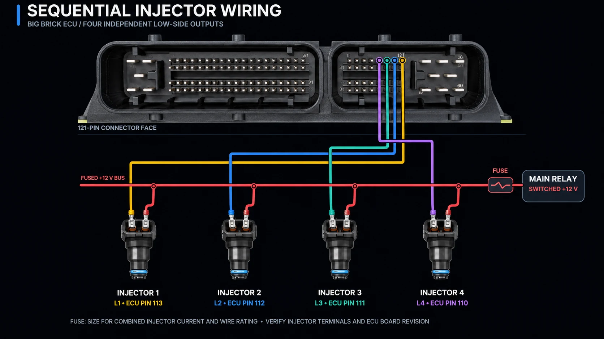
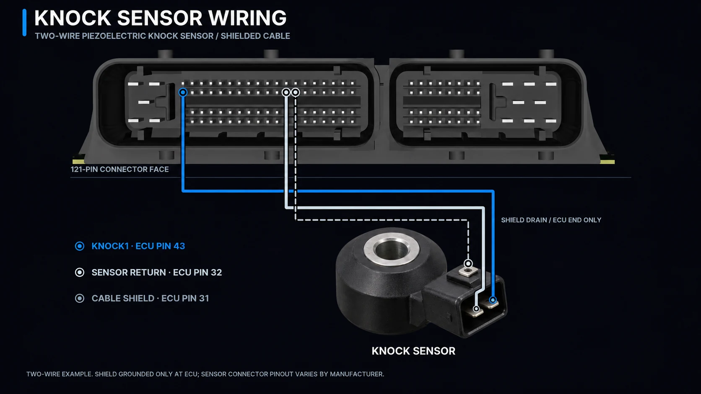

Get your engine running.
One guide, in build order. Full-size wiring diagrams, brief explanations, and checks before each next step.
Pin numbers are examples: D1, D4 or D5 may be used for a compatible Hall input when configured accordingly. The same rule applies to other matching free channels, but do not share a pin between different signals. Full connector lookup.
Start with the key switch and main relay.
The main relay supplies switched high-current power to the ECU and engine loads. The separate low-current wake feed keeps the ECU alive long enough to finish saving tune changes after the engine stops.

Wakes the ECU with its low-current input; main engine loads remain off.
Enables the relay coil and supplies the run-state input. The main relay feeds fused VIN and engine loads.
Momentary starter request to a properly interlocked starter relay or an ECU-managed start system.
Before moving on: Confirm wake and run states independently, correct relay operation, and stable fused ECU power with a protected, non-running test setup.
Connect the throttle body and pedal.
The throttle has a motor pair and two independent position signals. The accelerator pedal similarly uses position-sensor channels, but its actual terminal arrangement depends on the pedal assembly.

Pedal: Use the pedal's verified OEM connector assignment for its reference supply, sensor return and independent position outputs. Each position output requires its own analog input; the pedal does not connect to the throttle motor terminals.
Early checkpoint: With the engine off, starter disabled and fuel/ignition disconnected, verify both pedal position tracks and both throttle position tracks in tuning software. Carry out any throttle-motor actuation or calibration only with suitable safety precautions and the manufacturer's procedure; the blade may move unexpectedly.
Connect crank and cam sensors.
Choose the example matching the actual sensor technology. Configure the correct engine trigger pattern and input settings before attempting a start.

Hall / digital sensor
Typically needs power, sensor ground and a signal. D1 (pin 30) is an example; D2–D6 are also digital-input choices when available and configured appropriately. Verify whether your sensor uses 5 V or 12 V.

VR / differential sensor
Two signal conductors to VR1+ and VR1− (pins 6 and 7); shield termination at the ECU end as illustrated.
Checkpoint: Check for a valid and stable RPM reading and trigger synchronization during a controlled no-fuel, no-spark test before moving on.
Wire the coil type you actually have.
Smart and dumb coils are not wired the same way. Select the correct output type and confirm coil/driver compatibility before connecting power.

Smart coils
5 V logic trigger outputs (example COIL1–4: pins 94–97), fused switched power and the appropriate engine-head grounds.

Dumb coils / optional IGBT
Primary low-side switching from optional C1–C4 outputs (pins 119, 120, 121 and 117), with fused main-relay power.
Checkpoint: Confirm firing order, configured dwell, output assignments and coil compatibility before enabling ignition.
Connect the injectors.
Each injector gets its own ECU low-side channel; the common positive feed comes from a suitably fused main-relay circuit. The illustration uses four sequential channels.

Checkpoint: Match output-to-cylinder order, injector electrical characteristics and the total branch current to the ECU, wiring and fuse ratings before allowing fuel delivery.
Finish the sensors and widebands.
Complete the engine's required temperature, pressure and other analog inputs, then connect the wideband and knock sensors used by your installation.

Wideband oxygen sensor
Follow the six-terminal LSU 4.9 guide; each onboard controller has its own sensor connections and heater circuit.

Knock sensor
Use the correct signal, return and shielding arrangement for the selected knock sensor. KNOCK1 is pin 43 in the current pin map.
Checkpoint: Verify sensible sensor readings in the tuning software, including open/short fault behavior, before running the engine.
Configure, verify, then commission.
Load the firmware and TunerStudio configuration appropriate for the installed Big Brick hardware, confirm all assigned inputs and outputs, and follow the engine-specific trigger and fueling requirements.
Independent TPS and pedal channels, crank/cam sync, sensors, ignition configuration and fuel controls.
Fuses, grounding, starter interlocks, actuator failsafes, and correct switched-power behavior.
After stopping, leave ECU wake power present long enough for pending tune data to save.
These are example layouts, not a substitute for the final hardware schematic or the specific engine's sensor and actuator datasheets. Confirm terminal orientation and all functions before connecting a live engine.